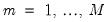
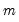
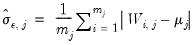
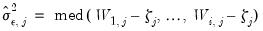
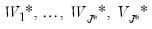
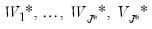

|
|
|
To perform wavelet analysis in EViews, open the series of interest and click on View/Wavelet Analysis. There are four sub-menu entries corresponding to the four areas of application. We consider each in turn.Typically, the first step in wavelet analysis is to perform a wavelet transform of some input series (discrete wavelet transform analysis is described in “Discrete Wavelet Transform”).Click on View/Wavelet Analysis/Transforms... to display the wavelet transform analysis dialog:
.
. The term is interchangeable with the familiar variance for non-complex functions. Wavelet basis functions assume the form:
convolves the scaling coefficients from the preceding iteration, namely , with both the high and low pass filter coefficients. The input signal in the first iteration is
. The entire algorithm continues until the
-th iteration, although it can be stopped earlier.
It’s important to note that both the DWT and the MODWT make use of circular filtering. In particular, when a filtering operation reaches the beginning or end of an input series, otherwise known as the boundaries, the filter treats the input time series as periodic with period. In other words, we assume that , are useful surrogates for unobserved values . Those wavelet coefficients which are affected by this circularity are also known as boundary coefficients. Note that the number of boundary coefficients only depends on the filter length
and is independent of the input series length
. Furthermore, the number of boundary coefficients increases with filter length
. Both DWT and MODWT boundary coefficients will appear the beginning of
and . You may refer to Percival and Walden (2000) for further details.
Similar to Fourier, spline, and linear approximations, a principal feature of the DWT is the ability approximate an input series as a function of wavelet basis functions. The general idea in wavelet theory is termed multiresolution analysis (MRA) and refers to the approximation of an input series at each scale (and up to all scales). For each ,
-dimensional vectors of the j-th level detail and the -th level smooth series. Furthermore, since the low-pass (high-pass) wavelet coefficients are associated with changes (averages) at scale
, the detail and smooth series are associated with changes and average at scale
, respectively, in the input series
.
, relies on large sample theory, and in practice requires a sample of at least to yield a decent approximation. The second estimator,
, assumes that the spectral density function of the wavelet coefficients at scale
is a band-limited. See Percival and Walden (2000) for detail.
The principle behind wavelet-based signal extraction, otherwise known as wavelet shrinkage, is to shrink any wavelet coefficients not exceeding some threshold to zero and then exploit the MRA to synthesize the signal of interest using the modified wavelet coefficients. In other words, only those wavelet coefficients associated with very pronounced spectra are retained with the additional benefit of deriving a very sparse wavelet matrix.


 is the location constant, and
is the location constant, and  is the scaling factor (which corresponds to the notion of frequency in Fourier analysis). Wavelet transforms are well-adapted to non-stationary and discontinuous phenomena since both scale and time resolutions are preserved.
is the scaling factor (which corresponds to the notion of frequency in Fourier analysis). Wavelet transforms are well-adapted to non-stationary and discontinuous phenomena since both scale and time resolutions are preserved. , let
, let  and define the matrix of DWT coefficients . Here,
and define the matrix of DWT coefficients . Here, is a vector of wavelet coefficients of length and is associated with changes on a scale of length
is a vector of wavelet coefficients of length and is associated with changes on a scale of length  . Moreover, is a vector of scaling coefficients of length
. Moreover, is a vector of scaling coefficients of length  and is associated with averages on a scale of length ‑. Furthermore, where is some
and is associated with averages on a scale of length ‑. Furthermore, where is some  orthonormal matrix generating the DWT coefficients.
orthonormal matrix generating the DWT coefficients.  has important implications. In particular, the DWT is an energy (variance) preserving transformation. Coupled with this preservation of energy is the decomposition of energy on a scale-by-scale basis. Then,
has important implications. In particular, the DWT is an energy (variance) preserving transformation. Coupled with this preservation of energy is the decomposition of energy on a scale-by-scale basis. Then, .
. can be decomposed as
can be decomposed as , and is estimated as
, and is estimated as at scale .
at scale .  is given by
is given by is the integral of the squared spectral density function of wavelet coefficients excluding any boundary conditions. As shown in Percival and Walden (2000), can be estimated as the sum of squared serial correlations among
is the integral of the squared spectral density function of wavelet coefficients excluding any boundary conditions. As shown in Percival and Walden (2000), can be estimated as the sum of squared serial correlations among  excluding boundary coefficients. Priestly (1981) notes that there is no condition that prevents the lower bound of this confidence interval from becoming negative.
excluding boundary coefficients. Priestly (1981) notes that there is no condition that prevents the lower bound of this confidence interval from becoming negative. -quantile of the
-quantile of the  distribution and
distribution and  is the equivalent degrees of freedom (EDOF) which may be estimated using one of two suggestions
is the equivalent degrees of freedom (EDOF) which may be estimated using one of two suggestions , the outlier detection algorithm is given by:
, the outlier detection algorithm is given by: denote the mean of the original observations excluding those two values. Between the two candidates, the outlier is the one which has the largest absolute deviation from .
denote the mean of the original observations excluding those two values. Between the two candidates, the outlier is the one which has the largest absolute deviation from . .
. is an unknown signal of interest obscured by the presence of unwanted noise
is an unknown signal of interest obscured by the presence of unwanted noise  . Traditionally, signal discernment was typically achieved using discrete Fourier transforms. Naturally, this assumes that any signal is an infinite superposition of sinusoidal functions; a strong assumption in empirical econometrics where most data exhibits unit roots, jumps, kinks, and various other non-linearities.
. Traditionally, signal discernment was typically achieved using discrete Fourier transforms. Naturally, this assumes that any signal is an infinite superposition of sinusoidal functions; a strong assumption in empirical econometrics where most data exhibits unit roots, jumps, kinks, and various other non-linearities. is the key to wavelet shrinkage. In particular, optimal thresholding is achieved when , the standard deviation of the noise process
is the key to wavelet shrinkage. In particular, optimal thresholding is achieved when , the standard deviation of the noise process  . There are several strategies for determining the optimal threshold:
. There are several strategies for determining the optimal threshold: is estimated using wavelet coefficients only at scale
is estimated using wavelet coefficients only at scale  , regardless of the scale under consideration. When this threshold rule is coupled with soft thresholding, the combination is commonly referred to as
, regardless of the scale under consideration. When this threshold rule is coupled with soft thresholding, the combination is commonly referred to as  is the familiar average mean squared error measurement of risk. Unfortunately, a closed form solution for this approach is not available, although tabulated values exist. When this threshold rule is coupled with soft thresholding, the combination is commonly referred to as
is the familiar average mean squared error measurement of risk. Unfortunately, a closed form solution for this approach is not available, although tabulated values exist. When this threshold rule is coupled with soft thresholding, the combination is commonly referred to as  based on this rule depends on the thresholding rule used, the solution may not be unique, so the SURE threshold value is the minimum of the
based on this rule depends on the thresholding rule used, the solution may not be unique, so the SURE threshold value is the minimum of the  . In case of the soft thresholding rule, the solution was proposed in Donoho and Johnstone (1994). For the hard thresholding rule, the solution was proposed in Jansen (2010).
. In case of the soft thresholding rule, the solution was proposed in Donoho and Johnstone (1994). For the hard thresholding rule, the solution was proposed in Jansen (2010). is obscured by some noise process
is obscured by some noise process  , the usual estimator of variance will exhibit extreme sensitivity to noisy observations.
, the usual estimator of variance will exhibit extreme sensitivity to noisy observations.  at scale
at scale  , and let denote its cardinality (total number of coefficients at that scale). Then, several common estimators have been proposed in the literature:
, and let denote its cardinality (total number of coefficients at that scale). Then, several common estimators have been proposed in the literature: so that you obtain the wavelet and scaling coefficients
so that you obtain the wavelet and scaling coefficients  .
. .
. for
for  using the selected threshold value and rule. This procedure will generate a set of modified wavelet and scaling coefficients .
using the selected threshold value and rule. This procedure will generate a set of modified wavelet and scaling coefficients .